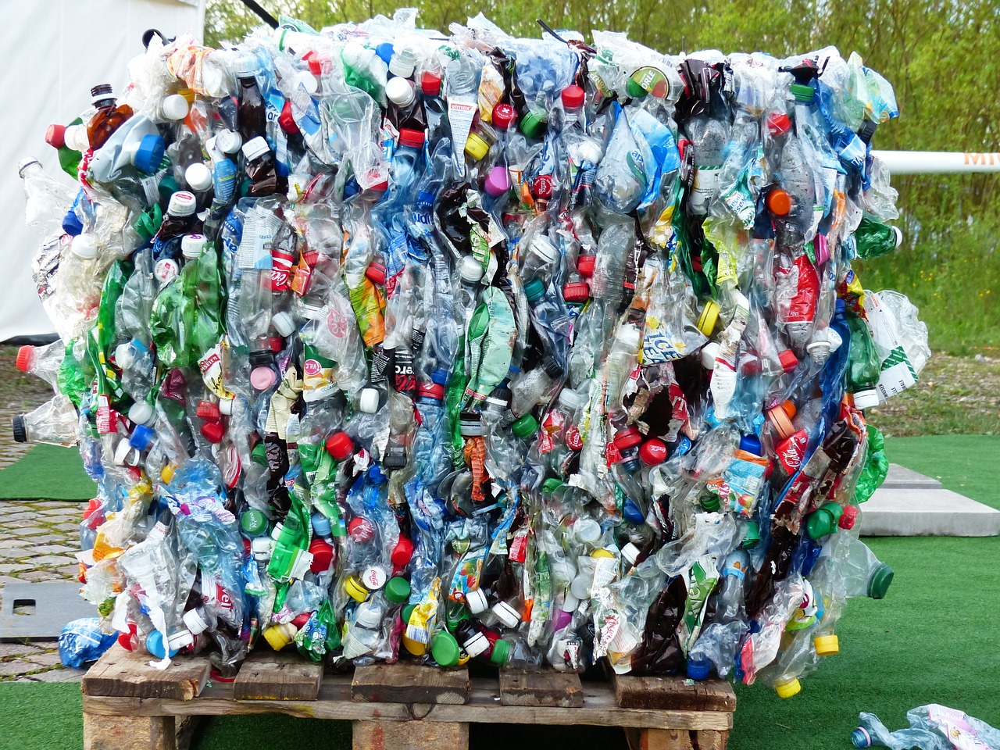
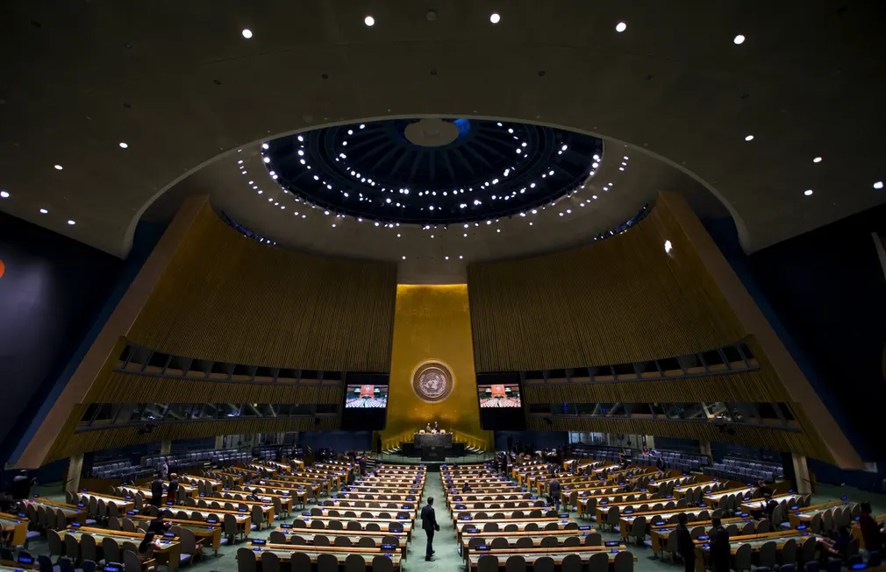
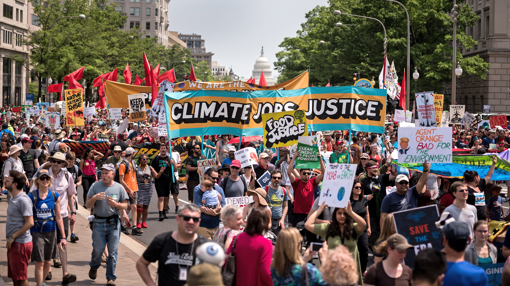

105,807 trees planted on or near GAIA sites since 2009.
Nature is fundamental to how we address health.
A huge body of evidence suggests that people who live in greener
environments tend to be healthier and that access to green space
can reduce the impact of income-related health inequalities.
We save 18 million tonnes of CO2 a year by recycling. We know it will take everyone working alongside each other to bring about real sustainable change. It’s time to take the climate crisis down by recycling more of the right things, more often. Recycle Now is here to help.
Environmental rule of law is central to sustainable development. It integrates environmental needs with the essential elements of the rule of law, and provides the basis for improving environmental governance. Without strong environmental laws and institutions, we will be unable to protect and restore our planet.
Our planet is 70% oceans and seas, but only a tiny fraction is currently protected. We need a global network of ocean sanctuaries to protect oceans from overfishing, oil drilling and plastic pollution. The new UN Global Ocean Treaty will help in this vital step for ocean conservation.
